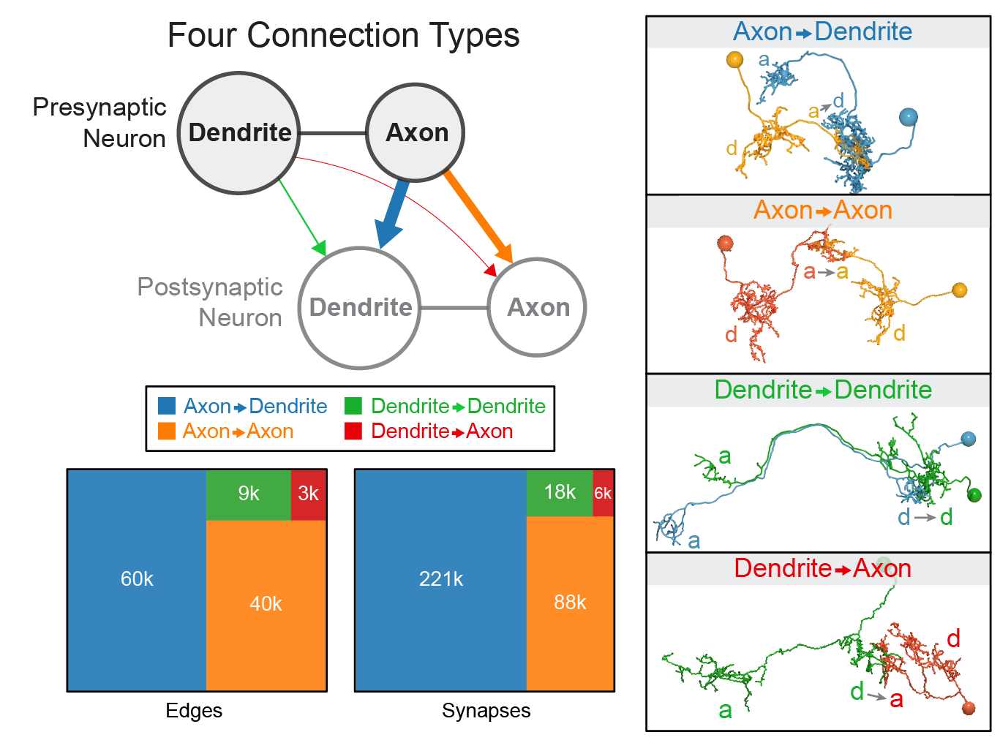

Graph matching for connectomics
Contents

Graph matching for connectomics#
Benjamin D. Pedigo#
(he/him) NeuroData lab Johns Hopkins University Dept. of Biomedical Engineering
 bpedigo@jhu.edu
bpedigo@jhu.edu
 @bdpedigo (Github)
@bdpedigo (Github)
 @bpedigod (Twitter)
@bpedigod (Twitter)
 bdpedigo.github.io
bdpedigo.github.io
These slides at:#
Bilaterally homologous neuron pairs#
We believe a matching exists!

Why care about the pairs?#
Proofreading
Understand stereotypy
Downstream analysis
Network embedding, for example
Useful to collapse complexity by ~2
Align one connectome to another, in some sense
How can we use the network structure to predict an {alignment, matching, pairing} of nodes from one network to another?#
When the node “labels” aren’t helpful#

Week 1: observe a network (\(A\)) of phone #s and the calls they make to each other
Week 2: all of the #s change! But a (noisy) version of that network still exists, with different labels… (\(B\))
How to map nodes of network \(A\) to those of network \(B\)?
How do we represent a network?#


Any permutation of an adjacency matrix is equally valid#
Permutation matrices (\(P\)) on 3 nodes#
Permuting an adjacency matrix#
\(PA\) permutes the rows of \(A\) \(AP^T\) permutes the columns of \(A\) So for an adjacency matrix, we always want \(PAP^T\)!
A permutation of one network with respect to another is an {alignment, matching, pairing}#
What is graph matching?#

Framing the graph matching problem mathematically#
\(\min_{P \in \mathcal{P}} \underbrace{\|A - \overbrace{PBP^T}^{\text{reordered } B}\|_F^2}_{\text{distance between adj. mats.}}\)#
where \(\mathcal{P}\) is the set of permutation matrices#
Measures the number of edge disagreements for unweighted networks,
Norm of edge disagreements for weighted networks
Graph matching - how do we do it?#
\(\min_{P \in \mathcal{P}} \|A - P B P^T\|_F^2\)#
Search space is not convex:
\(0.5 P_1 + 0.5 P_2 \notin \mathcal{P}\)
Relax to the “birkoff polytope:” doubly stochastic matrices
Rows and columns all sum to 1, but not all elements have to be 1
Similar to transport as opposed to assignment problems: we are still mapping nodes between networks, but this is a soft mapping
Apply Frank-Wolfe method
Minimize a first-order Taylor series of the objective function over a convex set
Requires a gradient \(\nabla f(P)\)
Let’s try it out…#
graspologic#
from graspologic.match import GraphMatch
gm = GraphMatch() # parameters go in here
gm.fit(A, B) # adjacency matrices go in here
perm = gm.perm_inds_ # indices representing the permutation
B_permuted = B[perm][:, perm]
SciPy#
from scipy.optimize import quadratic_assignment
quadratic_assignment(A,B,method='faq',options=dict(maximize=True))
Larval Drosophila brain connectome#
 ~3k neurons, ~550K synapses
Both hemispheres
~3k neurons, ~550K synapses
Both hemispheres

Matching (by connectivity only) performs fairly well#

With “vanilla” graph matching: ~80% correct (according to expert annotator)
Many ways to try to improve on this…#
Partial knowledge of the matching (seeds)
Neuron similarity information, (e.g. NBLAST/morphology)
Edge types allow for “multilayer” graph matching

Summary of “edge types” based on neuron compartments
Seeds (partial known pairing of nodes)#
\(\min_{P \in \mathcal{P_{s}}} \|A - P B P^T\|_F^2\)#
where \(\mathcal{P_{s}}\) is the set of permutations which respect your known, partial pairing#
graspologic#
from graspologic.match import GraphMatch
gm = GraphMatch()
gm.fit(A, B, seeds_A=[1,2,3], seeds_B=[4,5,1])
Similarity information (e.g. morphology)#
If \(S\) is a matrix representing the similarity of each object in \(A\) (rows) to each object in \(B\) (columns)…
\(\min_{P \in \mathcal{P}} \|A - P B P^T\|_F^2 + trace(SP^T)\)#
graspologic#
from graspologic.match import GraphMatch
gm = GraphMatch()
gm.fit(A, B, S=S)
Edge types (multilayer graph matching)#
\(\min_{P \in \mathcal{P}} \|A^{(1)} - P B^{(1)} P^T\|_F^2 + \|A^{(2)} - P B^{(2)} P^T\|_F^2 + ...\)#
graspologic (in development)#
from graspologic.match import graph_match
graph_match([A1, A2], [B1, B2])
Thus far, we’ve not used the contralateral connections#
These are about 1/3 of the edges in the brain!#
From graph matching to bisected graph matching#

New gradient:
Simulations#
Created simulated networks with two “sides”
Ipsilateral subgraphs had edge correlation of 0.8
Contralateral subgraphs had varying correlation (x-axis at right)
Measured matching accuracy for graph matching (GM) and bisected graph matching (BGM)

Connectome datasets#

Graph matching for modern connectomics (putting it all together)#
\(\min_{P \in \mathcal{P}_s} \left [ \sum_{i=1}^K \|A_{LL}^{(i)} - P A_{RR}^{(i)} P^T\|_F^2 + \sum_{i=1}^K \|A_{LR}^{(i)} P^T - P A_{RL}^{(i)} \|_F^2 + tr(S P^T) \right ]\)
where:
\(\mathcal{P}_s\) is the set of permutation matrices which respect fixed seeds, \(s\), where the seeds give a known correspondence between some of the neurons.
\(A_{LL}\) and \(A_{RR}\) are the within-hemisphere (ipsilateral) subgraphs.
\(A_{LR}\) and \(A_{RL}\) are the between-hemisphere (contralateral) subgraphs.
\(S\) is a matrix of similarity scores between neurons, e.g. morphology (NBLAST).
\(K\) is the number of layers or edge types e.g. axo-axonic, axo-dendritic, etc.
Putting it all together in the (new) code#
graspologic (in development)#
from graspologic.match import graph_match
indices_A, indices_B, score, misc = graph_match(A_ll, # left-to-left
A_rr, # right-to-right
AB=A_lr, # left-to-right
BA=A_rl, # right-to-left
S=S, # similarity (e.g. morphology)
partial_match=seeds # known alignemnt)
indices_A is a selection of the nodes of A
indices_B is a (at least partial) permutation of B
score is the final graph matching objective function
misc is a dictionary with extra details about the optimization path
Practical considerations#
Networks not of the same size (see
padding)Stopping tolerance for the algorithm
max_itercontrols the maximum number of iterations (default is 30). If results are poor and computation is not taking too long, can try increasingtolis a stopping tolerance, same considerations as the above
Initialization
Controlled by
initparameterDefault is the “barycenter”: can think of as an uninformative initialization
Number of restarts
Algorithm is typically not deterministic, even from the same initialization
n_initparameter controls number of restarts
R code#
More info#
Tutorial on graph matching https://bdpedigo.github.io/networks-course/graph_matching.html
Code in graspologic https://microsoft.github.io/graspologic/latest/reference/reference/match.html
Code in SciPy https://docs.scipy.org/doc/scipy/reference/generated/scipy.optimize.quadratic_assignment.html
Big thanks to Ali Saad-Eldin for writing most of the code!
This repo: https://github.com/neurodata/bgm
This Jupyter Book: http://docs.neurodata.io/bgm/abstract.html
This manuscript: https://www.biorxiv.org/content/10.1101/2022.05.19.492713